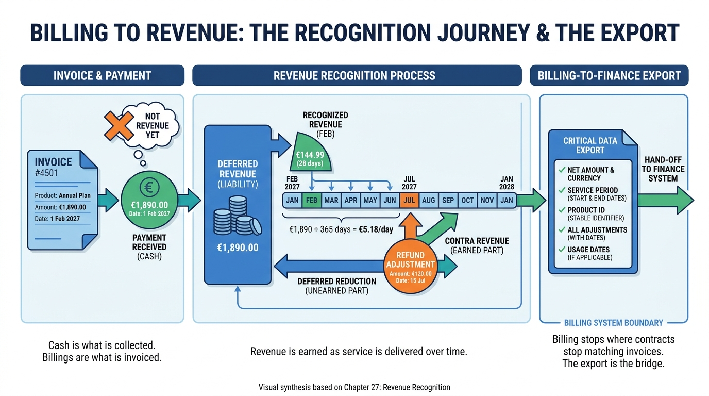

Part VI — REVENUE: Billing, Tax and Recognition
Cash Is Not Revenue: Revenue Recognition and the Hand-off to Finance
AI-assisted: researched and written with Claude Code; illustrations generated with Gemini. How this works

Image generated by Google Gemini (gemini-3-pro-image-preview)